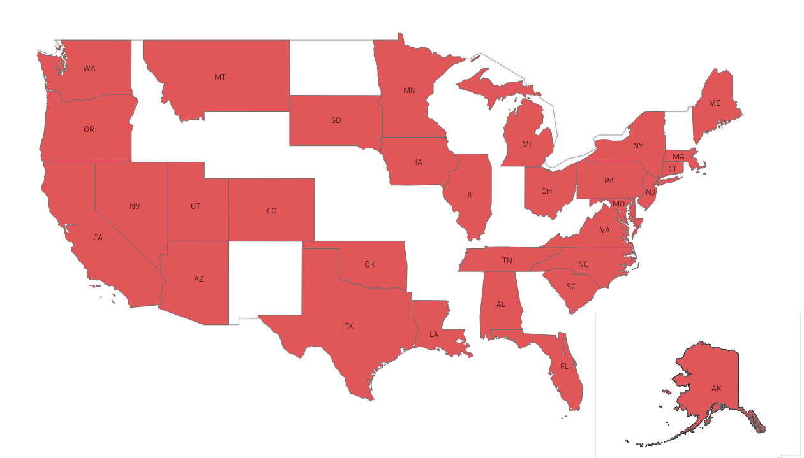

Papa Bear Gifts does its best to assure that all items are shipped in a timely manner
and arrive in the condition described. Items are usually wrapped in tissue paper and
shipped in a box or a bubble mailer. If items need extra protection (usually skincare/beauty products),
it may be wrapped with bubble wrap and placed in a box.
All orders can be tracked on the respective platforms where they are placed.
For orders placed on Poshmark, tracking information will be available through the
Poshmark platform. Poshmark uses UPS. For orders placed on eBay, tracking information
will be available through the eBay platform. eBay uses USPS. Transactions must
be completed on either eBay or Poshmark- outside of either location is
unacceptable.
At the moment, Papa Bear Gifts only ships domestically within the United States.
We do not offer international shipping at this time.

As of August 2026, Papa Bear Gifts has shipped items to over 30 states, including Alaska!
In the past, we have also shipped figure skating gear to Australia!